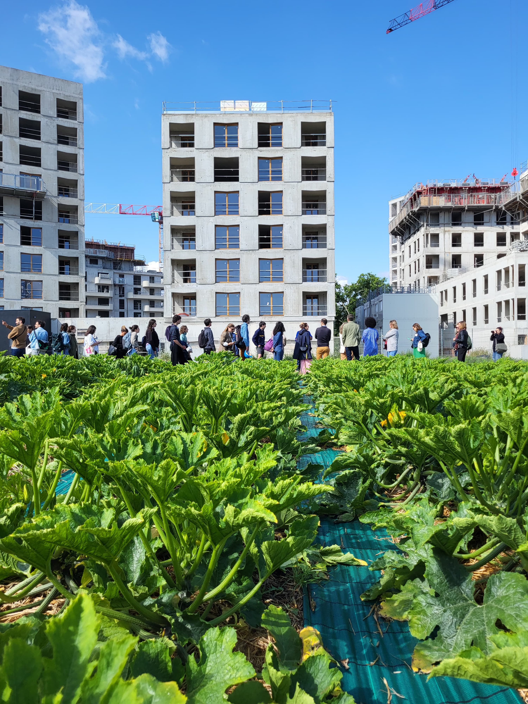
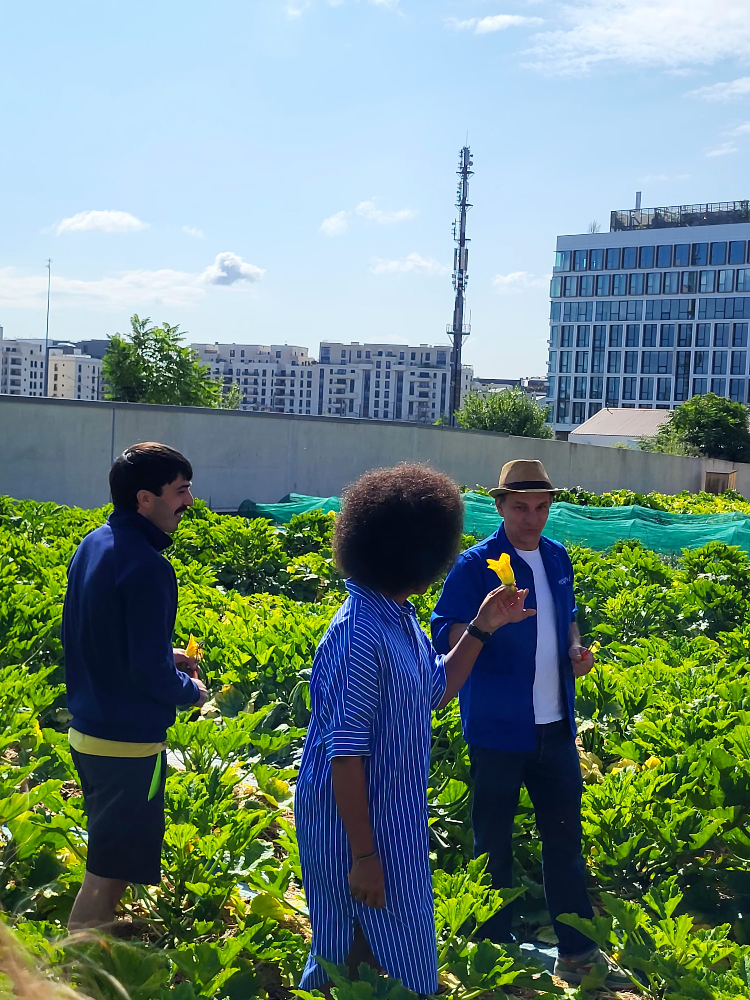
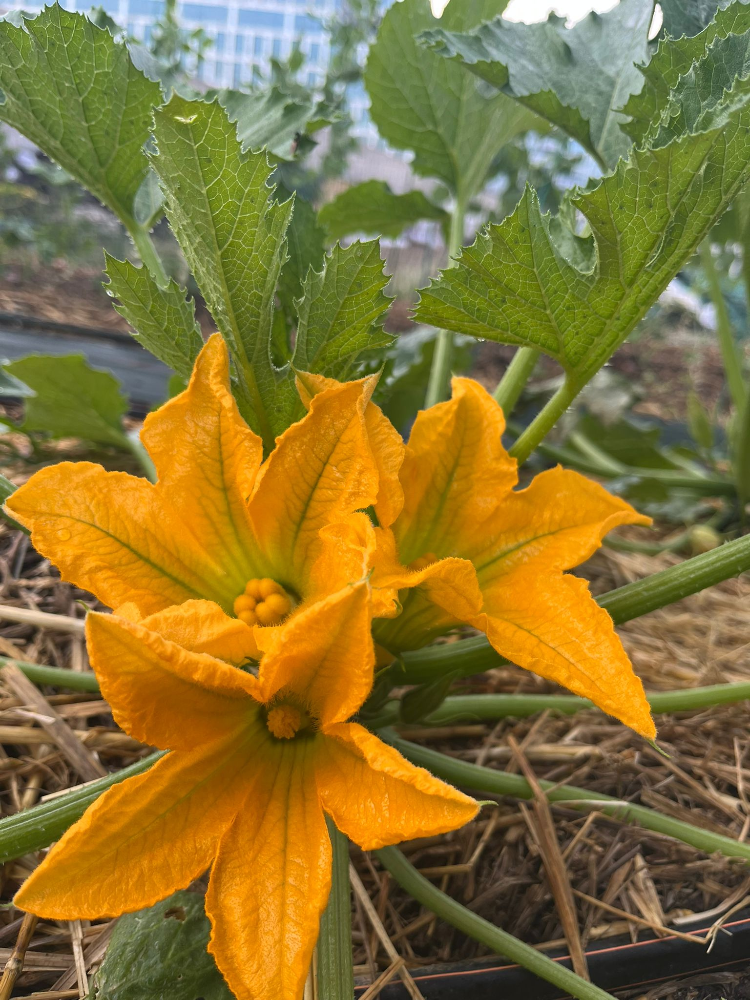
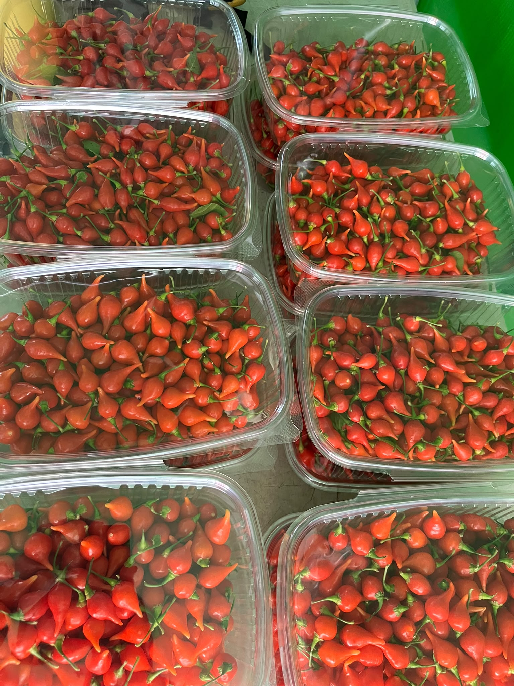
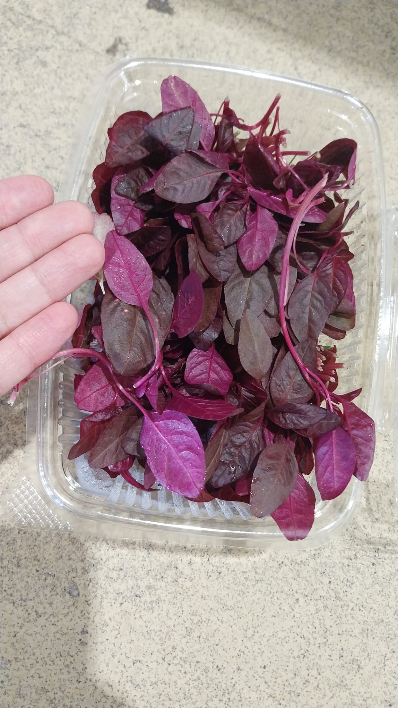

Saint-Ouen · Paris
Du goût.
Pas des kilomètres.
Nous cultivons des végétaux de caractère, à quelques kilomètres des cuisines qui les font vivre.
Défiler pour entrer

Une ferme en ville
Faire pousser
plus près.
La ville autour. Le vivant au centre.

La saison comme boussole
Ce qui se voit.
Ce qui se goûte.
Des fleurs, des jeunes pousses et des mini-légumes, cultivés avec précision pour les assiettes des chefs.

Pour la cuisine
Un produit
qui a du nerf.
Couleur. Texture. Intensité. Chaque culture est pensée pour déclencher une idée en cuisine.

Des chefs qui choisissent le vivant
On cultive.
Vous créez.
Des restaurants engagés aux grandes tables, nous fournissons des produits frais, identifiables et faits pour être travaillés.
Parlons cuisine
Vous avez
une idée ?
Écrivez-nous pour recevoir notre sélection du moment ou imaginer une culture avec nous.
Contacter Wesh Grow ↗